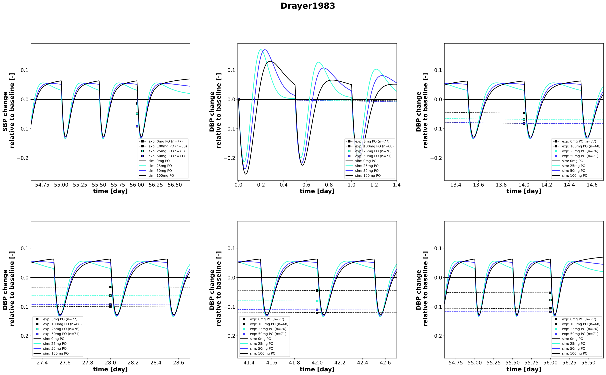

|  |
../../../../experiments/studies/drayer1983.py
"""Drayer1983"""
from copy import deepcopy
from typing import Dict, Tuple, List, Hashable
import numpy as np
from sbmlsim.data import DataSet, load_pkdb_dataframe
from sbmlsim.fit import FitMapping, FitData
from sbmlutils.console import console
from pkdb_models.models.captopril.experiments.base_experiment import (
CaptoprilSimulationExperiment,
)
from pkdb_models.models.captopril.experiments.metadata import Tissue, Route, Dosing, Health, Fasting, PKPDData,\
CaptoprilMappingMetaData
from sbmlsim.plot import Axis, Figure
from sbmlsim.simulation import Timecourse, TimecourseSim
from pkdb_models.models.captopril.helpers import run_experiments
class Drayer1983(CaptoprilSimulationExperiment):
"""Simulation experiment for Drayer1983.
Captopril pharmacodynamics: single-drug therapy on a twice-daily basis for 8 weeks,
patients with mild-to-moderate essential hypertension.
"""
doses = {
"placebo": 0,
"cap25": 25,
"cap50": 50,
"cap100": 100
}
bw = {
"placebo": 80,
"cap25": 87,
"cap50": 84,
"cap100": 80
}
sbp = {
"placebo": 157,
"cap25": 156,
"cap50": 154,
"cap100": 158
}
dbp = {
"placebo": 102,
"cap25": 101,
"cap50": 101,
"cap100": 102
}
routes = "PO"
colors = {
"placebo": CaptoprilSimulationExperiment.renal_colors["Control"],
"cap25": CaptoprilSimulationExperiment.doses_colors["25mg"],
"cap50": CaptoprilSimulationExperiment.doses_colors["50mg"],
"cap100": CaptoprilSimulationExperiment.doses_colors["100mg"],
}
groups = []
elements_unique = ["blood pressure diastolic (change relative)", "blood pressure systolic (change relative)"]
def datasets(self) -> dict[str, DataSet]:
dsets = {}
self.reset_state()
self.groups = []
for fig_id in ["Fig1", "TabText2"]:
df = load_pkdb_dataframe(f"{self.sid}_{fig_id}", data_path=self.data_path)
for label, df_label in df.groupby("label"):
if not label.endswith("standing"):
dset = DataSet.from_df(df_label, self.ureg)
for element in self.elements_unique:
if element in label:
self.data_collection(element=element, label=label)
dset.unit_conversion(
self.data_type, self.conversion_factor
)
if label.startswith("CAP0"):
self.groups.append("placebo")
elif label.startswith("CAP25"):
self.groups.append("cap25")
elif label.startswith("CAP50"):
self.groups.append("cap50")
else:
self.groups.append("cap100")
dsets[f"{label}"] = dset
break
#console.print(dsets.keys())
#console.print(dsets)
return dsets
def simulations(self) -> Dict[str, TimecourseSim]:
# for what?
Q_ = self.Q_
tcsims = {}
for group, dose in self.doses.items():
# multiple dosing
tc_start = Timecourse(
start=0,
end=12*60, # minutes
steps=400,
changes={
**self.default_changes(),
f"{self.routes}DOSE_cap": Q_(dose, "mg"),
f"BW": Q_(self.bw[group], "kg"),
f"SBP_ref": Q_(self.sbp[group], "mmHg"),
f"DBP_ref": Q_(self.dbp[group], "mmHg")
},
)
tc = Timecourse(
start=0,
end=12 * 60, # minutes
steps=400,
changes={
**self.default_changes(),
f"{self.routes}DOSE_cap": Q_(dose, "mg"),
},
)
tc_end = Timecourse(
start=0,
end=24 * 60 * 2, # minutes
steps=400,
changes={
**self.default_changes(),
f"{self.routes}DOSE_cap": Q_(dose, "mg"),
},
)
tcsims[f"cap_{self.routes}_{dose}_{group}_multiple"] = TimecourseSim(
timecourses=[tc_start] + [deepcopy(tc) for _ in range(111)] + [tc_end], # in average 9-hour washout before the last measurement, 12 taken
) # 8 weeks two times per day = 8 * 7 * 2 = 112 times
return tcsims
def fit_mappings(self) -> Dict[str, FitMapping]:
mappings = {}
for kr, dset_id in enumerate(self.clabels):
element = self.element_ids[kr]
group = self.groups[kr]
dose = self.doses[group]
mappings[f"fm_capPO_{element}_plasma_{dose}_{group}"] = (
FitMapping(
self,
reference=FitData(
self,
dataset=dset_id,
xid="time",
yid="mean",
yid_sd="mean_sd",
count="count",
),
observable=FitData(
self,
task=f"task_cap_{self.routes}_{dose}_{group}_multiple",
xid="time",
yid=self.yids[kr],
),
metadata=CaptoprilMappingMetaData(
tissue=Tissue.PLASMA,
route=Route.PO,
dosing=Dosing.MULTIPLE,
health=Health.HEALTHY,
fasting=Fasting.NR,
data=PKPDData.PD
),
)
)
return mappings
def figures(self) -> Dict[str, Figure]:
return {
#**self.pk_figures(),
**self.pd_figures()
}
def pk_figures(self) -> Dict[str, Figure]:
fig = Figure(
experiment=self,
sid="PK",
num_rows=1,
num_cols=2,
name=f"{self.__class__.__name__}",
)
plots = fig.create_plots(
xaxis=Axis(self.labels["time"], unit="week"), legend=True
)
yids_unique = ["[Cve_cap]", "[Cve_captot]"]
for ky, yid_unique in enumerate(yids_unique):
plots[ky].set_yaxis(self.labels[yid_unique], unit=self.units[yid_unique])
plots[ky].xaxis.max = 8.5
plots[ky].xaxis.min = 7
for group, dose in self.doses.items():
# simulation
plots[ky].add_data(
task=f"task_cap_{self.routes}_{dose}_{group}_multiple",
xid="time",
yid=yid_unique,
label=f"sim: {dose} mg dose",
color=self.colors[group],
)
return {fig.sid: fig}
def pd_figures(self) -> Dict[str, Figure]:
fig = Figure(
experiment=self,
sid="PD",
num_rows=2,
num_cols=3,
name=f"{self.__class__.__name__}",
height=self.panel_height * 3,
width=self.panel_width * 4,
)
plots = fig.create_plots(
xaxis=Axis(self.labels["time"], unit="day"), legend=True
)
time_periods = {
"DBP_change_relative": {
"0-1": (-0.001 * 7, 0.2 * 7), # weeks
"2-3": (1.9 * 7, 2.1 * 7),
"4-5": (3.9 * 7, 4.1 * 7),
"6-7": (5.9 * 7, 6.1 * 7),
"7-8": (7.8 * 7, 8.1 * 7),
},
"SBP_change_relative": {
"7-8": (7.8 * 7, 8.1 * 7), # weeks
}
}
yids_unique = ["SBP_change_relative", "DBP_change_relative"] #, "SBP_change_relative"
for ky, yid_unique in enumerate(yids_unique):
for kt, time_period in enumerate(time_periods[yid_unique].values()):
plots[ky+kt].set_yaxis(self.labels[yid_unique], unit=self.units[yid_unique])
plots[ky+kt].xaxis.min = time_period[0]
plots[ky+kt].xaxis.max = time_period[1]
for k, yid in enumerate(self.yids):
group = self.groups[k]
if yid == yid_unique:
# dataset
plots[ky+kt].add_data(
dataset=self.clabels[k],
xid="time",
yid="mean",
# yid_sd="mean_sd",
count="count",
label=f"exp: {self.doses[group]}mg PO",
color=self.colors[group],
)
for group, dose in self.doses.items():
for kt, time_period in enumerate(time_periods[yid_unique].values()):
# simulation
plots[ky+kt].add_data(
task=f"task_cap_{self.routes}_{dose}_{group}_multiple",
xid="time",
yid=yid_unique,
label=f"sim: {dose}mg PO",
color=self.colors[group],
)
return {fig.sid: fig}
if __name__ == "__main__":
run_experiments(Drayer1983, output_dir=Drayer1983.__name__)
{kind=link}